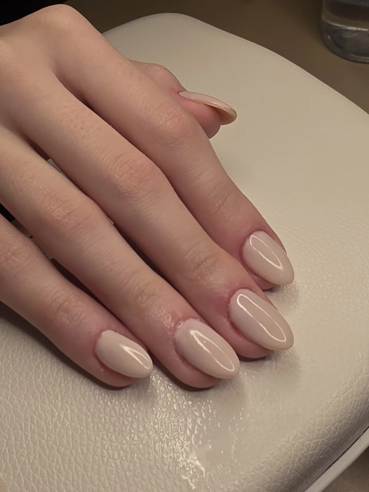
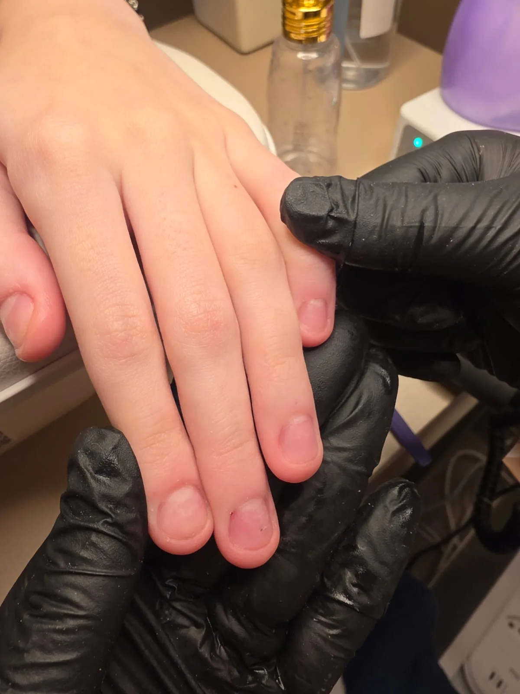
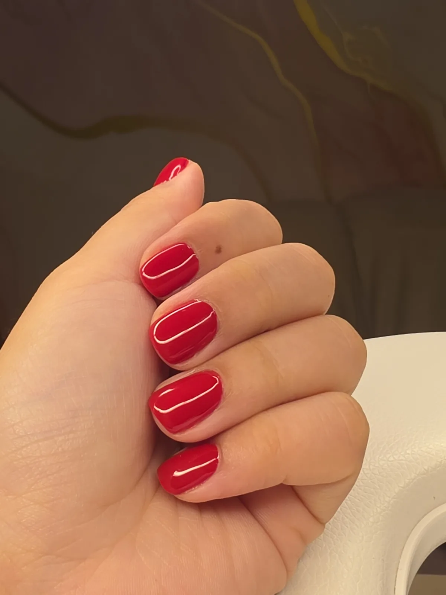

Quanto dura a esmaltação em gel? O que encurta e como fazer durar mais
Por Nayara das Dores Santos, nail designer e responsável técnica do Manicura Express Nails, no Anhangabaú, em Jundiaí/SP · publicado em
A esmaltação em gel tem maior durabilidade que o esmalte comum, mas não existe um número igual para todo mundo: quanto ela dura varia de pessoa para pessoa. Pesam o crescimento da sua unha, o preparo, a secagem completa de cada camada na cabine e a sua rotina em casa. E, mesmo com tudo certo, a unha da mão cresce cerca de 3,5 mm por mês1 — é esse espacinho perto da cutícula que costuma pedir a próxima visita.

Por que a esmaltação em gel dura mais que o esmalte comum?
O esmalte comum é uma película colorida que fica sobre a unha. O gel é diferente: ele é feito para polimerizar sobre a unha, endurecendo com a luz da cabine3, e forma uma camada que resiste a lascar e foi pensada para durar mais que o esmalte comum2.
Aqui no estúdio, a esmaltação em gel tem maior durabilidade que o esmalte comum. Quanto ela dura, exatamente, varia de pessoa para pessoa — e dá para entender bem o porquê.
Pense no gel como uma camada que precisa de três coisas para ficar firme: uma boa base para grudar (o preparo), uma reação completa na luz (a secagem) e uma rotina que não force as bordas o tempo todo. Quando uma dessas partes falha, a durabilidade cai.
- Polimerização:
- a “secagem” do gel: a reação, disparada pela luz da cabine, que transforma o gel líquido numa camada firme.
- Cabine de secagem:
- o aparelho de luz LED/UV onde cada camada de gel endurece. No estúdio, usamos a cabine O NAIL.
- Onicólise:
- quando a própria unha se solta do dedo, deixando uma área esbranquiçada embaixo. É diferente do gel descolar.
O que faz o gel durar menos?
Na bancada, quase sempre é uma destas quatro coisas:
- Preparo apressado. O gel precisa de uma unha limpa, sem oleosidade e sem restos de cutícula sobre a superfície. Se o preparo pula etapas, o gel perde aderência e começa a soltar pelas bordas.
- Secagem incompleta. Cada camada precisa do tempo e da luz certos na cabine. Com menos luz ou menos tempo, sobra mais material sem reagir3 — ou seja, parte do gel não endureceu por completo.
- Impacto e rotina. Usar a unha como ferramenta (abrir lata, raspar etiqueta) e bater a ponta com frequência cobram seu preço. Até quando é a própria unha que se solta do dedo, nas mãos a maioria dos casos vem de trauma, da manicure, do trabalho ou de hábitos do dia a dia4.
- O crescimento da unha. Esse não tem como evitar — e merece uma explicação só dele.

Quanto a unha cresce por mês?
Um estudo que acompanhou 22 adultos jovens saudáveis mediu, em média, 3,47 mm por mês nas unhas das mãos — cerca de 3,5 mm1. É unha nova, sem gel, aparecendo pouco a pouco bem ali perto da cutícula.
O gel continua firme, mas a esmaltação vai “subindo” junto com a unha. É por isso que, mesmo sem lascar nada, o crescimento costuma ser o que pede a próxima visita — e esse ritmo muda de pessoa para pessoa.
Nos pés, a história é outra: as unhas crescem 1,62 mm por mês, menos da metade da velocidade das mãos no mesmo estudo1. Por isso, na Pedicure Gel UV, o espacinho do crescimento demora mais para aparecer.
Como fazer sua esmaltação em gel durar mais?
A parte técnica é com a gente. A sua parte é simples:
- Unha não é ferramenta. Use a ponta dos dedos, uma colher ou uma tesoura para abrir embalagens.
- Luvas na limpeza pesada. Dica de bancada: proteger as mãos dos produtos de limpeza poupa as bordas da esmaltação.
- Hidrate a cutícula. Um óleo ou creme de cutícula mantém a pele em volta bonita enquanto o gel faz o trabalho dele.
- Levantou uma pontinha? Não puxe. Arrancar o gel pode deixar a unha mais fina e fraca5. Chame a gente no WhatsApp; para tirar, existe a Remoção Esmaltação em Gel, feita no estúdio.
- Agende a próxima visita antes que o crescimento incomode: a profissional indica o intervalo certo para o ritmo da sua unha e a sua rotina.

Como cuidamos da durabilidade no Manicura Express Nails, em Jundiaí?
- Preparo sem pressa da cutícula, do formato e da superfície da unha, para o gel aderir bem.
- Camadas finas — base, cor e finalização —, cada uma seca na cabine O NAIL antes da próxima.
- Revisão das bordas no acabamento, que é por onde o descolamento costuma começar.
- Kit esterilizado em autoclave, aberto na sua frente, dentro do nosso protocolo Beleza Segura.
E, se algo não sair como deveria, fale com a gente pelo WhatsApp: a gente prefere olhar a sua unha de perto a deixar você na dúvida.
Veja como é a nossa esmaltação em gel em Jundiaí → Por que a cabine faz diferença na secagem do gel → Autoclave ou estufa: qual realmente esteriliza? →
Perguntas frequentes
Quanto tempo dura a esmaltação em gel?
A esmaltação em gel tem maior durabilidade que o esmalte comum, mas o tempo varia de pessoa para pessoa: depende do crescimento da sua unha, do preparo, da secagem completa na cabine e da sua rotina. Com os cuidados certos, ela dura mais.
Por que meu gel descolou tão rápido?
Os motivos mais comuns são preparo apressado da unha, secagem incompleta das camadas na cabine e impacto do dia a dia, como usar a unha para abrir embalagens. Se levantar, não puxe: fale com o estúdio.
Quanto a unha cresce por mês?
Em média, a unha da mão cresce cerca de 3,5 mm por mês, segundo um estudo com adultos saudáveis. Esse espacinho de unha nova, sem gel, aparece perto da cutícula e costuma ser o que pede a próxima visita.
E no pé, o espacinho do crescimento aparece mais rápido?
Não, mais devagar. A unha do pé cresce cerca de 1,6 mm por mês, menos da metade da unha da mão. Por isso, na pedicure em gel, o espacinho do crescimento demora mais para aparecer.
Quando devo agendar a próxima esmaltação em gel?
Antes que o crescimento incomode. O intervalo varia de pessoa para pessoa, e a profissional indica o melhor para a sua unha e a sua rotina. Se uma pontinha levantar, não puxe: fale com o estúdio pelo WhatsApp.
Sua próxima esmaltação em gel, feita com calma
Manicure Gel UV no Anhangabaú, com secagem na cabine O NAIL e kit aberto na sua frente.
AGENDAR MEU MOMENTOAv. Comandante Videlmo Munhoz, 91, Sala 3 – Anhangabaú, Jundiaí/SP · (11) 95996-3541 · Seg–Sex 9h–12h e 13h–19h30 · Sáb 8h–12h
De onde vêm essas informações?
- Yaemsiri S, Hou N, Slining MM, He K. Growth rate of human fingernails and toenails in healthy American young adults. Journal of the European Academy of Dermatology and Venereology, 2010;24(4):420-423. DOI: 10.1111/j.1468-3083.2009.03426.x
- Draelos ZD. Nail cosmetics and adornment. Dermatologic Clinics, 2021;39(2):351-359. DOI: 10.1016/j.det.2021.01.001
- Taki K, Nakamura T. Effects of curing conditions and formulations on residual monomer contents and temperature increase of a model UV gel nail formulation. Journal of Cosmetics, Dermatological Sciences and Applications, 2011;1(4):111-118. DOI: 10.4236/jcdsa.2011.14017
- Zaias N, Escovar SX, Zaiac MN. Finger and toenail onycholysis. Journal of the European Academy of Dermatology and Venereology, 2015;29(5):848-853. DOI: 10.1111/jdv.12862
- Chen AF, Chimento SM, Hu S, Sanchez M, Zaiac M, Tosti A. Nail damage from gel polish manicure. Journal of Cosmetic Dermatology, 2012;11(1):27-29. DOI: 10.1111/j.1473-2165.2011.00595.x
A maior durabilidade do gel em relação ao esmalte comum é a referência do estúdio para a Manicure Gel UV; o tempo real varia de pessoa para pessoa. As dicas práticas de bancada (preparo, selagem das bordas, sinais de descolamento, cuidados em casa) vêm da experiência e da formação técnica da autora: Química Sem Mistérios 3.0, V Workshop Master em Cabines e Descolamento Zero.
Este texto tem caráter informativo e não substitui avaliação médica. Se a unha doer, mudar de cor, se soltar do dedo ou se a pele em volta coçar, arder ou inchar, procure um dermatologista.